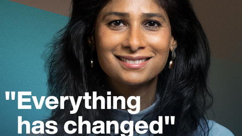
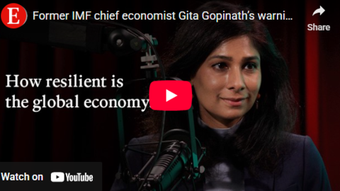
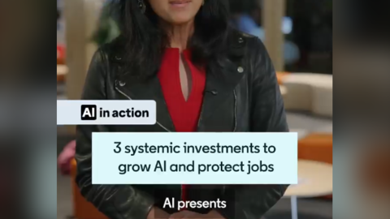

November 30, 2025
Gita Gopinath: "No estamos en una situación en la que se pueda ignorar la necesidad de ajustes fiscales"
La Tercera

Videos/Podcasts

February 5, 2026
"Everything has changed." - Gita Gopinath on the global economy in 2026
Radio Davos

October 31, 2025
Former IMF chief economist Gita Gopinath's warning for rich world economies
The Economist | Money Talks Podcast

October 24, 2025
IMF on AI: How to protect workers and invest in digital infrastructure
LinkedIn News